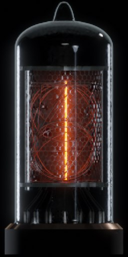
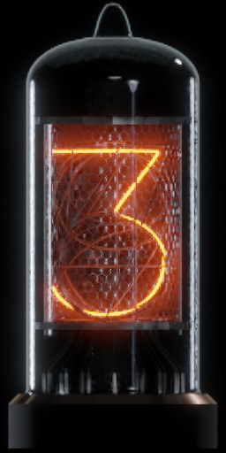
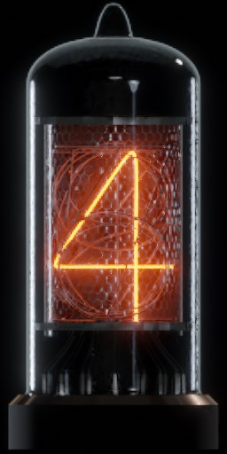

<!DOCTYPE html>
<html lang="ja">
<meta charset="utf-8" />
<meta name="viewport" content="user-scalable=no, viewport-fit=cover">
<title>Nixie Clock</title>
<link rel="stylesheet" type="text/css" href="./css/style.css">
<link rel="apple-touch-icon" sizes="144x144" href="./icon-144.png" />
<link rel="icon" href="./favicon.ico">
<link rel="manifest" href="./manifest.json">

<script type="text/javascript">

if ('serviceWorker' in navigator) {
    navigator.serviceWorker.register('sw.js').then(function(registration) {
      // 登録成功
      console.log('ServiceWorker の登録に成功しました。スコープ: ', registration.scope);
    }).catch(function(err) {
      // 登録失敗
      console.log('ServiceWorker の登録に失敗しました。', err);
    });
}

  ( function(){
  document.addEventListener('DOMContentLoaded',outputClock,false);
  function outputClock(){
    var img_src;
    const DIG_OBJ = document.getElementById('clock');
    for( var i=0; i<8; i++ ){
      const ADD_DIV = document.createElement('div');
      ADD_DIV.setAttribute('class','Nums'+i);
      DIG_OBJ.appendChild(ADD_DIV);
      if( i==2 || i==5 ){ img_src = ''; }
      else { img_src = 'img/0.jpg'; }
      ADD_DIV.innerHTML = '';
    }
    moveDigital();
  }
  
  // Move the numbers.
  function moveDigital(){
    var now   = new Date();
    var hour   = now.getHours();
    var hour2  = hour % 10;
    var hour1  = (hour-hour2) / 10 ;
    var min   = now.getMinutes();
    var min2  = min % 10;
    var min1  = (min - min2) / 10; 
    var sec    = now.getSeconds();
    var sec2   = sec % 10;
    var sec1   = (sec - sec2) / 10;
    navigator.vibrate(5);
    document.getElementById('dig0').src = 'images/'+hour1+'.jpg';
    document.getElementById('dig1').src = 'images/'+hour2+'.jpg';
    document.getElementById('dig3').src = 'images/'+min1+'.jpg';
    document.getElementById('dig4').src = 'images/'+min2+'.jpg';
    document.getElementById('dig6').src = 'images/'+sec1+'.jpg';
    document.getElementById('dig7').src = 'images/'+sec2+'.jpg';
  }
  setInterval( moveDigital,1000 );
  
  }() );
  </script>

<!--
<div class="wrapper">
<div class="grid">
  <div class="grid_child">
    
  </div>
  <div class="grid_child">
    
  </div>
  <div class="grid_child">
    
  </div>
  <div class="grid_child">
    
  </div>
  <div class="grid_child">
    
  </div>
  <div class="grid_child">
    
  </div>
</div>
</div>
-->
<div id="clock" class="clock">
</div>